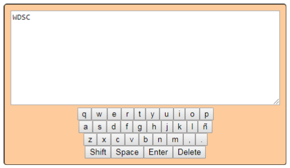

S'ha de crear un teclat virtual que permeti escriure mitjançant diferents inputs que simulen cadascuna de les lletres de l'abecedari:

Intro que efectua un salt de línia. Shift que una vegada polsada commuta entre minúscules i majúscules. Space que escriu un espai.
Delete que esborra l'últim caràcter.
La zona on es veurà reflectit el text és un textarea i tot el contingut ha de crear-se des de JS, tenint en l'HTML un únic div. Material d'anàlisi:
setAttribute()